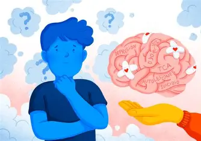
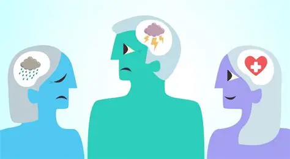

¿ Que es la salud mental ?
Hablemos de salud mental: Más allá de las etiquetas
La salud mental es un estado de bienestar emocional, psicológico y social que permite afrontar el estrés diario, mantener relaciones sanas y tomar decisiones adecuadas. Implica cómo las personas piensan, sienten y actúan en distintas situaciones, y no solo la ausencia de enfermedad, sino también el equilibrio necesario para disfrutar la vida y adaptarse a los cambios.
Comprender la salud mental permite reconocer su impacto en todas las etapas de la vida, desde la infancia hasta la vejez. Factores como la genética, el entorno familiar, la educación, la situación económica y experiencias traumáticas pueden influir en este equilibrio, y los problemas de salud mental pueden presentarse en cualquier persona, sin importar edad, género o condición social.
Es fundamental que las personas cuiden su salud mental a través de hábitos de vida saludables, como una buena nutrición, ejercicio y un sueño adecuado, además de buscar apoyo de un psicólogo o psiquiatra, incluso antes de que aparezcan los primeros síntomas de un posible trastorno.
La salud mental es un proceso continuo y dinámico. Imagínalo como un espectro: en un extremo está el bienestar pleno y en el otro el malestar profundo. Todos nos movemos a lo largo de esa línea durante nuestra vida, dependiendo de nuestras circunstancias, nuestra genética y el entorno que nos rodea.
Experimentar estrés antes de un examen, sentir duelo por una pérdida o tener días de mucha ansiedad no significa que "estés roto" o que hayas fracasado. Significa que eres humano. Lo verdaderamente importante de la salud mental es desarrollar la resiliencia: la capacidad de adaptarte, aprender de las dificultades y saber levantar la mano para pedir apoyo cuando el camino se pone demasiado cuesta arriba.